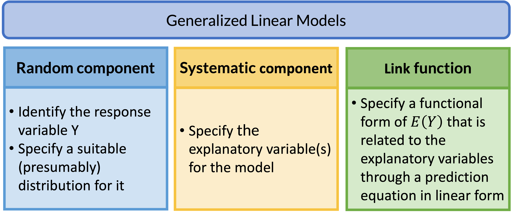

Lesson 16: Poisson Regression
Learning Objectives
Review: Generalized Linear Models (GLMs)

GLM: Random Component
- The random component specifies the response variable \(Y\) and selects a probability distribution for it
Basically, we are just identifying the distribution for our outcome
If Y is binary: assumes a binomial distribution of Y
If Y is count: assumes Poisson or negative binomial distribution of Y
If Y is continuous: assumea Normal distribution of Y
GLM: Systematic Component
- The systematic component specifies the explanatory variables, which enter linearly as predictors \[\beta_0+\beta_1X_1+\ldots+\beta_kX_k\]
Above equation includes:
- Centered variables
- Interactions
- Transformations of variables (like squares)
- Systematic component is the same as what we learned in Linear Models
GLM: Link Function
If \(\mu = E(Y)\), then the link function specifies a function \(g(.)\) that relates \(\mu\) to the linear predictor as: \[g\left(\mu\right)=\beta_0+\beta_1X_1+\ldots+\beta_kX_k\]
- \(g\left(\mu\right)\) is the transformation we make to \(E(Y)\) (aka \(\mu\)) so that the linear predictors (right side of equation) can be linked to the outcome
The link function connects the random component with the systematic component
Can also think of this as: \[\mu=g^{-1}\left(\beta_0+\beta_1X_1+\ldots+\beta_kX_k\right)\]
GLM: Link Function

Poisson Distribution
- This distribution is often used to model count data
- Examples:
- Distribution of number of deaths due to lung cancer
- Distribution of number of individuals diagnosed with leukemia
- Distribution of number of hospitalizations
Poisson Distribution (II)
- The probability function of Poisson distribution: \[P(Y = y | \mu) = \dfrac{\mu^y e^{-\mu}}{y!}\]
- Where \(y\)’s are non-negative integers \(y=0, 1, 2,...\)
- Where \(\mu\) is the mean of \(Y\), that is \(E(Y)=\mu\)
- And also, \(\text{var}(Y)=\mu\)
- For a Poisson distribution, \(Y \sim \text{Poisson}(\mu)\)
- Range: \([0, \infty)\)
Poisson Distribution (III)
- If we look at the probability of \(y\) events in a time period \(t\) for a Poisson random variable, we could write: \[P(Y = y | \mu) = \dfrac{\mu^y e^{-\mu}}{y!}\]
- Where \(y\)’s are non-negative integers \(y=0, 1, 2,...\)
- Where \(\mu = \lambda t\), where \(\lambda\) is the expected number of events per unit time
- Then \(\mu\) is the expected number of events over time \(t\)
What does \(\lambda\) represent in the Poisson distribution?
- What does \(\lambda\) represent?
- A rate, the expected number of events in a given population over a given period time
- Example: Number of patient arrivals into the Emergency Room per hour
- The Poisson distribution is the prototype for assigning probabilities of observing any number of events
Poll Everywhere Question 1
Why Person-Years? (I)
- In the example of number of patient arrivals, an event does not conclude the study
- If someone arrives within the first minute of the study, then we keep counting
- We may be able to study the association of arrivals with qualities of the hospital, but we can’t measure qualities of the individuals arriving
- What happens if we want to measure qualities of the individual?
- We can measure a hospitalization rate
Why Person-Years? (II)
- If we are measuring at the individual level and counting something that is “terminal” then our count will always be 0 or 1
- Example: Number of individuals diagnosed with leukemia
- This only happens once, so how do we measure the rate here?
- Since rate involves the counts and time – we can use the time to diagnosis to estimate the rate
- Often expressed in units such as events per thousand person-years
Calculating Person-Year
One person-year is a unit of time defined as one person being followed for one year
Person-years for a sample of n subjects is calculated as the total years followed for the n subjects, where each subject could have different follow-up time
Example: suppose we have 5 subjects, two of the subjects were followed for 2 years, and two of them are followed for 3 years and the fifth subject was followed for 3.8 years
\[\text{person-years} = 2 \text{ people} \cdot 2 \text{ years} +2 \text{ people} \cdot 3 \text{ years}+ 1 \text{ person} \cdot 3.8 \text{ years} = 13.8 \text{ person-years}\]
Calculating Rate (II)
- Suppose that we observe one event during the follow-up period, then
\[\begin{aligned} \text{Rate of event} &= \dfrac{\# events}{\text{person-years}}= \dfrac{1 \text{ event}}{13.8 \text{person-years}} \\ &= 0.072 \text{ events per person−year} \\ &=72 \text{ events per } 1000 \text{ person−years} \end{aligned}\]
Review: Simple Logistic Regression
- Let Y is the dependent variable of interest and x is a predictor variable,
- In simple logistic regression, we have \[\log\left(\frac{\pi(X)}{1 - \pi(X)}\right) = \beta_0 + \beta_1 X\]
- where \(\pi (X) =P(Y = 1 \mid X = x)\)
Simple Poisson Regression Model
What do we model in a Poisson regression?
Log of conditional mean of Y given x
- Let Y be a Poisson count for a given unit of time, then \(\mu(X) =\lambda(X)\)
- In a simple Poisson regression, we have \[\ln(\mu(X)) = \ln(\lambda(X)) = \beta_0 + \beta_1 X\]
So this is also called a log-linear model
Parameter Interpretation (I)
In simple Poisson regression: \[\ln(\mu(X)) = \ln(\lambda(X)) = \beta_0 + \beta_1 X\]
When \(X\) is a binary variable: How do we interpret \(\beta_1\)?
- When \(X=0\)
- When \(X=1\)